第 1 页 · 数智人才培养

数智人才培养
AI通识精品系列
周苏 教授 QQ：81505050
人工智能通识教程

第 2 页 · 第11章
第11章
周苏 教授 QQ：81505050
计算机视觉


第 3 页 · 计算机视觉是一门研究如何使机器“看”的科学，更进一步的说，就是指用摄影机、照相机和电脑代替人眼对目标进行识别、跟踪和测量
计算机视觉是一门研究如何使机器“看”的科学，更进一步的说，就是指用摄影机、照相机和电脑代替人眼对目标进行识别、跟踪和测量等的机器的视觉，并进一步做图形处理，使之成为更适合人眼观察或传送给仪器检测的图像。
第11章 计算机视觉
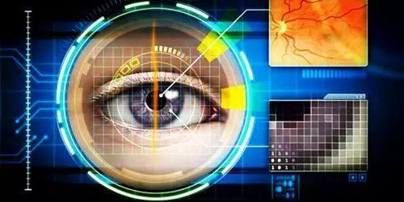
第 4 页 · 计算机视觉研究相关的理论和技术，试图建立能够从图像或者多维数据中获取“信息”的人工智能系统。这里所指的信息，是指可以用来
计算机视觉研究相关的理论和技术，试图建立能够从图像或者多维数据中获取“信息”的人工智能系统。这里所指的信息，是指可以用来帮助做“决定”的内容。因为感知可以看作是从感官信号中提取信息，所以计算机视觉也可以看作是研究如何使人工系统从图像或多维数据中“感知”的科学。
第11章 计算机视觉
第 5 页 · 01

01
模式识别
02
图像识别
03
计算机
视觉技术
04
智能图像
处理技术
目录 / CONTENTS
05
视觉技术
的应用
第 6 页 · PART 01
PART 01
模式识别
第 7 页 · 模式识别原本是人类的一项基本智能，是指对表征事物或现象的不同形式（数值、文字和逻辑关系）的信息做分析和处理，从而得到一个
模式识别原本是人类的一项基本智能，是指对表征事物或现象的不同形式（数值、文字和逻辑关系）的信息做分析和处理，从而得到一个对事物或现象做出描述、辨认和分类等的过程。随着计算机技术发展和人工智能的兴起，人类自身的模式识别已经满足不了社会发展的需要，于是就希望用计算机来代替或扩展人类的部分脑力劳动。这样，模拟人类图像识别过程的计算机图像识别技术就产生了。
11.1 模式识别
第 8 页 · 模式识别与数学关系紧密，其思想方法与概
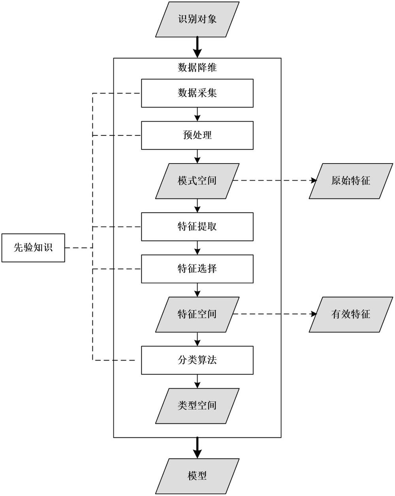
模式识别与数学关系紧密，其思想方法与概
率统计、心理学、语言学、计算机科学、生
物学、控制论等学科都有关系。
图11-2 模式识别过程
11.1 模式识别
第 9 页 · 模式识别的内容包括文字识别、图像识别、语音识别和生物识别等。从处理问题的性质和解决问题的方法等角度来看，模式识别可分为抽
模式识别的内容包括文字识别、图像识别、语音识别和生物识别等。从处理问题的性质和解决问题的方法等角度来看，模式识别可分为抽象和具体两种形式。前者如意识、思想、议论等，属于概念识别研究的范畴。而这里所指的模式识别主要是对语音波形、地震波、心电图、脑电图、图片、照片、文字、符号、生物传感器等对象的具体模式进行辨识。要实现计算机视觉必须有图像处理的帮助，而图像处理依赖于模式识别过程的有效运用。
11.1 模式识别
第 10 页 · 模式识别研究主要集中在两方面，
模式识别研究主要集中在两方面，
一是研究生物体（包括人）是如何感知对象的，属于认识科学的范畴，
二是在给定的任务下，如何用计算机实现模式识别的理论和方法。
应用计算机对一组事件或过程进行辨识和分类，所识别的事件或过程可以是文字、声音、图像等具体对象，也可以是状态、程度等抽象对象。这些对象与数字形式的信息相区别，称为模式信息。
11.1 模式识别
第 11 页 · PART 02
PART 02
图像识别
第 12 页 · 图像识别，是指利用计算机对图像进行处理、分析和理解，以识别各种不同模式的目标和对象，它是深度学习算法的一种应用实践。图像
图像识别，是指利用计算机对图像进行处理、分析和理解，以识别各种不同模式的目标和对象，它是深度学习算法的一种应用实践。图像识别技术一般分为人脸识别与商品识别，人脸识别主要用在安全检查、身份核验与移动支付中；商品识别主要用在商品流通过程中，特别是无人货架、智能零售等无人零售领域 。另外，在地理学中，图像识别也指将遥感图像进行分类的技术。
图像识别的方法主要有三种：统计模式识别、结构模式识别和模糊模式识别。
11.2 图像识别
第 13 页 · 人类拥有记忆和“高明”的识别系统，比如告诉你面前的一只动物是“猫”，以后你再看到猫，一样可以认出来。图形刺激作用于感觉器
人类拥有记忆和“高明”的识别系统，比如告诉你面前的一只动物是“猫”，以后你再看到猫，一样可以认出来。图形刺激作用于感觉器官，人们辨认出它是以前见过的某一图形的过程，叫图像再认。在图像识别中，既要有当时进入感官的信息，也要有记忆中存储的信息。只有通过存储的信息与当前的信息进行比较的加工过程，才能实现对图像的再认。
11.2.1 人类的图像识别能力
第 14 页 · 人的图像识别能力是很强的。图像距离的改变或图像在感觉器官上作用位置的改变，都会造成图像在视网膜上的大小和形状的改变。即使
人的图像识别能力是很强的。图像距离的改变或图像在感觉器官上作用位置的改变，都会造成图像在视网膜上的大小和形状的改变。即使在这种情况下，人们仍然可以认出他们过去知觉过的图像。甚至图像识别可以不受感觉通道的限制。例如，人可以用眼看字，当别人在他背上写字时，他也可以认出这个字来。
11.2.1 人类的图像识别能力
第 15 页 · 人类是通过眼睛接收到光源反射，“看”到自己眼前的事物，但是很多内容元素人们可能并不在乎；就像曾经与你擦肩而过的一个人，如
人类是通过眼睛接收到光源反射，“看”到自己眼前的事物，但是很多内容元素人们可能并不在乎；就像曾经与你擦肩而过的一个人，如果你再次看到并不一定会记得他。然而，人工智能会记住它见过的任何人、任何事物。例如人类觉得很简单的黄黑相间条纹，如果问问人
工智能系统，它给出的答案也许是“99%的概率
是校车”。对于右图，人工智能系统虽不能看出
这是一条戴着墨西哥帽的吉娃娃狗，但起码能识
别出这是一条戴着宽边帽的狗。
图11-3 识别戴着墨西哥帽的吉娃娃狗
11.2.1 人类的图像识别能力
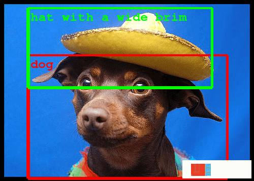
第 16 页 · 怀俄明大学进化人工智能实验室的一项研究表明，人工智能未必总是那么灵光，也会把这些随机生成的简单图像当成了鹦鹉、乒乓球拍或
怀俄明大学进化人工智能实验室的一项研究表明，人工智能未必总是那么灵光，也会把这些随机生成的简单图像当成了鹦鹉、乒乓球拍或者蝴蝶。当研究人员把这个研究结果提交给神经信息处理系统大会讨论时，专家形成了泾渭分明的两派意见。一组人领域经验丰富，他们认为这个结果是完全可以理解的；另一组人则对研究结果感到困惑，至少在一开始对强大的人工智能算法却把结果完全弄错感到惊讶。
11.2.1 人类的图像识别能力
第 17 页 · 图像识别以图像的主要特征为基础。每个图像都有它的特征，如字母A有个尖，P有个圈、而Y的中心有个锐角等。对图像识别时眼动的
图像识别以图像的主要特征为基础。每个图像都有它的特征，如字母A有个尖，P有个圈、而Y的中心有个锐角等。对图像识别时眼动的研究表明，人们的视线总是集中在图像的主要特征上，也就是集中在图像轮廓曲度最大或轮廓方向突然改变的地方，这些地方的信息量最大。而且，眼睛的扫描路线也总是依次从一个特征转到另一个特征上。由此可见，在图像识别过程中，知觉机制必须排除输入的多余信息，抽出关键信息。同时，在大脑里必定有一个负责整合信息的机制，它能把分阶段获得的信息整理成一个完整的知觉映像。
11.2.2 图像识别基础
第 18 页 · 人类往往要通过不同层次的信息加工才能实现对复杂图像的识别。对于熟悉的图形，由于掌握了它的主要特征，会把它当作一个单元来识
人类往往要通过不同层次的信息加工才能实现对复杂图像的识别。对于熟悉的图形，由于掌握了它的主要特征，会把它当作一个单元来识别，而不再注意它的细节。这种由孤立单元材料组成的整体单位叫做组块，每一个组块同时被感知。在文字材料的识别中，人们可以把一个汉字的笔划或偏旁等单元组成组块，而且能把经常在一起出现的字或词组成组块单位来加以识别。
事实上，基于计算机视觉的图像检索也可以分为类似文本搜索引擎的三个步骤：提取特征、建立索引以及查询。在计算机视觉识别系统中，图像内容通常用图像特征进行描述。
11.2.2 图像识别基础
第 19 页 · 举例：图片线条特征提取后高层特征的逐层构建，其中展示了不同层提取到了不同的特征。
举例：图片线条特征提取后高层特征的逐层构建，其中展示了不同层提取到了不同的特征。
第1层是一些简单的线条颜色等。
第2层是不同线条组成的简单形状。
第3层是简单形状组成的简单图案。
图11-4 图像特征提取的第1层和3层
11.2.2 图像识别基础
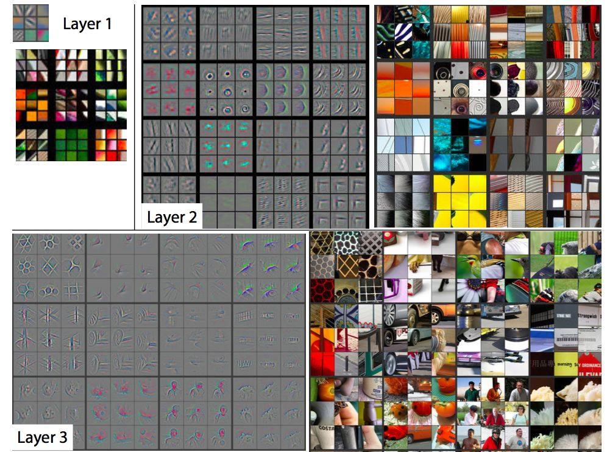
第 20 页 · 第4层在第3层基础上面构建了部分狗脸的轮廓等更复杂的特征（下图）。
第4层在第3层基础上面构建了部分狗脸的轮廓等更复杂的特征（下图）。
第5层又增加了部分复杂性
的轮廓，比如人脸等。
图11-5 图像特征提取的
第4层和第5层
11.2.2 图像识别基础
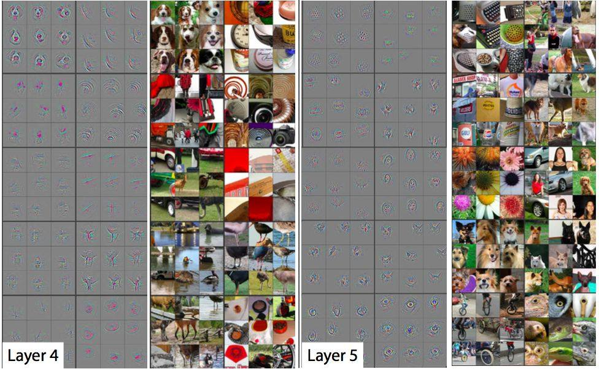
第 21 页 · 为了编制模拟人类图像识别活动的计算机程序，人们提出了不同的图像识别模型。例如，模板匹配模型认为，识别某个图像，过去的经验
为了编制模拟人类图像识别活动的计算机程序，人们提出了不同的图像识别模型。例如，模板匹配模型认为，识别某个图像，过去的经验中有这个图像的记忆模式，叫做模板。当前的刺激如果与大脑中的某个模板相匹配，这个图像就被识别了。事实上人不仅能识别与脑中的模板完全一致的图像，也能识别与模板不完全一致的图像。例如，人们不仅能识别某一个具体的字母A，也能识别印刷体的、手写体的、方向不正、大小不同的各种字母A。同时，人能识别的图像是大量的，如果所识别的每一个图像在脑中都有一个相应的模板，这是不可能的。
11.2.3 图形识别模型
第 22 页 · 为了解决模板匹配模型存在的问题，格式塔心理学家又提出了一个原型匹配模型。这种模型认为，在长时记忆中存储的并不是所要识别的
为了解决模板匹配模型存在的问题，格式塔心理学家又提出了一个原型匹配模型。这种模型认为，在长时记忆中存储的并不是所要识别的无数个模板，而是图像的某些“相似性”。从图像中抽象出来的“相似性”作为原型，拿它来检验所要识别的图像。如果找到一个相似的原型，这个图像就被识别了。这种模型从神经上和记忆探寻的过程来看，都比模板匹配模型更适宜，而且还能说明对一些不规则的，但某些方面与原型相似的图像的识别。
11.2.3 图形识别模型
第 23 页 · 但是，这种模型没有说明人是怎样对相似的刺激进行辨别和加工的，它也难以在计算机程序中得到实现。因此又有人提出了一个更复杂的
但是，这种模型没有说明人是怎样对相似的刺激进行辨别和加工的，它也难以在计算机程序中得到实现。因此又有人提出了一个更复杂的模型——“泛魔”识别模型，又称“万鬼堂”，它是一种具体的特征分析模型：
第1层：印象鬼，对外部刺激编码形成刺激映像；
第2层：特征鬼，进行特征分解；
第3层：认知鬼，监视特征鬼的反应，综合各种特征并作出反应；
第4层：决策鬼，根据认知鬼的反应做出决策，识别模式。
11.2.3 图形识别模型
第 24 页 · 在一般工业使用中，采用工业相机拍摄图片，然后利用软件根据图片灰阶差做处理后识别出有用信息。
在一般工业使用中，采用工业相机拍摄图片，然后利用软件根据图片灰阶差做处理后识别出有用信息。
图像识别的发展经历三个阶段：文字识别、数字图像处理与识别、物体识别。
· 文字识别：研究开始于1950年。一般是识别字母、数字和符号，从印刷文字识别到手写文字识别，应用非常广泛。
· 数字图像处理和识别：研究开始于1965年。数字图像与模拟图像相比具有存储和传输方便、可压缩、传输过程中不易失真、处理方便等巨大优势，为图像识别技术的发展提供了强大动力。
11.2.3 图形识别模型
第 25 页 · · 物体识别：主要是指对三维世界的客体及环境的感知和认识，属于高级计算机视觉范畴。它是以数字图像处理与识别为基础，结合了
· 物体识别：主要是指对三维世界的客体及环境的感知和认识，属于高级计算机视觉范畴。它是以数字图像处理与识别为基础，结合了多学科的研究方向，其研究成果被广泛应用在各种工业及机器人探测上。
11.2.3 图形识别模型
第 26 页 · 神经网络图像识别技术是在传统的图像识别方法基础上了融合神经网络算法的一种图像识别方法。在神经网络图像识别技术中，遗传算法
神经网络图像识别技术是在传统的图像识别方法基础上了融合神经网络算法的一种图像识别方法。在神经网络图像识别技术中，遗传算法与BP（反向传播）网络相融合的神经网络图像识别模型非常经典，在很多领域都有它的应用。BP网络是1986年由科学家鲁梅尔哈特和麦克莱兰提出的概念，是一种按照误差逆向传播算法训练的多层前馈神经网络。在图像识别系统中利用神经网络系统，一般会先提取图像的特征，再利用图像所具有的特征映射到神经网络进行图像识别分类。
11.2.4 神经网络图像识别
第 27 页 · 以汽车拍照自动识别技术为例，当汽车通过的时候，汽车自身具有的检测设备会有所感应。此时检测设备就会启用图像采集装置来获取汽
以汽车拍照自动识别技术为例，当汽车通过的时候，汽车自身具有的检测设备会有所感应。此时检测设备就会启用图像采集装置来获取汽车正反面的图像。获取图像后上传到计算机进行保存以便识别。车牌定位模块提取车牌信息，对车牌上的字符进行识别并显示最终的结果。在对车牌上的字符进行识别时就用到了基于模板匹配算法和基于人工神经网络算法。
11.2.4 神经网络图像识别
第 28 页 · PART 03
PART 03
计算机视觉技术
第 29 页 · 计算机视觉技术是计算机模拟人类的视觉过程，具有感受环境的能力和人类视觉功能的技术。图像处理、人工智能和模式识别等技术的综
计算机视觉技术是计算机模拟人类的视觉过程，具有感受环境的能力和人类视觉功能的技术。图像处理、人工智能和模式识别等技术的综合。
11.3 计算机视觉技术
第 30 页 · 机器视觉是人工智能领域中发展迅速的一个重要分支，正处于不断突破、走向成熟的阶段。一般认为，机器视觉“是通过光学装置和非接
机器视觉是人工智能领域中发展迅速的一个重要分支，正处于不断突破、走向成熟的阶段。一般认为，机器视觉“是通过光学装置和非接触传感器自动地接受和处理一个真实场景的图像，通过分析图像获得所需信息或用于控制机器运动的装置”。具有智能图像处理功能的机器视觉，相当于人们在赋予机器智能的同时为机器按上了眼睛，使机器能够“看得见”“看得准”，可替代甚至胜过人眼做测量和判断，使得机器视觉系
统可以实现高分辨率和高速度的控制。而且，机器
视觉系统与被检测对象无接触，安全可靠。
图11-6 图像处理与模式识别应用于指纹识别
11.3.1 什么是机器视觉
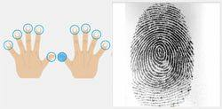
第 31 页 · 机器视觉的起源可追溯到20世纪60年代美国学者L. R. 罗伯兹对多面体积木世界的图像处理研究，70年代麻省理工学院（M
机器视觉的起源可追溯到20世纪60年代美国学者L. R. 罗伯兹对多面体积木世界的图像处理研究，70年代麻省理工学院（MIT）人工智能实验室“机器视觉”课程的开设。到80年代，全球性机器视觉研究热潮开始兴起，出现了一些基于机器视觉的应用系统。90年代以后，随着计算机和半导体技术的飞速发展，机器视觉的理论和应用得到进一步发展。
11.3.1 什么是机器视觉
第 32 页 · 进入21世纪后，机器视觉技术的发展速度更快，已经大规模地应用于多个领域，如智能制造、智能交通、医疗卫生、安防监控等领域。
进入21世纪后，机器视觉技术的发展速度更快，已经大规模地应用于多个领域，如智能制造、智能交通、医疗卫生、安防监控等领域。常见机器视觉系统主要分为两类，一类是基于计算机的，如工控机或PC，另一类是更加紧凑的嵌入式设备。典型的基于工控机的机器视觉系统主要包括：光学系统，摄像机和工控机（包含图像采集、图像处理和分析、控制/通信）等单元（见图11-7）。机器视觉系统对核心的图像处理要求算法准确、快捷和稳定，同时还要求系统的实现成本低，升级换代方便。
11.3.1 什么是机器视觉
第 33 页 · 图11-7 机器视觉系统
图11-7 机器视觉系统
11.3.1 什么是机器视觉
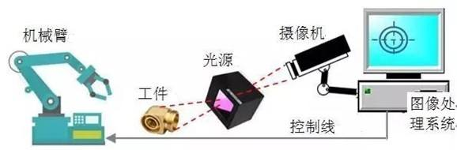
第 34 页 · 视觉是各个应用领域，如制造业、检验、文档分析、医疗诊断和军事等领域中各种智能/自主系统中不可分割的一部分。由于
视觉是各个应用领域，如制造业、检验、文档分析、医疗诊断和军事等领域中各种智能/自主系统中不可分割的一部分。由于
它的重要性，一些先进国家把对计算机视觉的研
究列为对经济和科学有广泛影响的科学和工程中
的重大挑战。
图11-8 计算机视觉的相关领域
11.3.2 定义计算机视觉
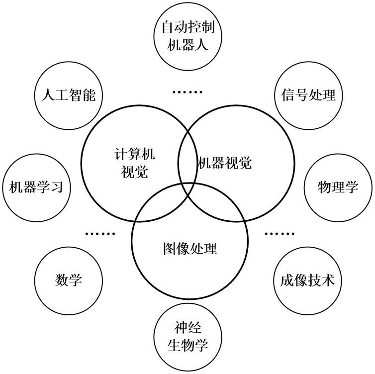
第 35 页 · 从图像处理和模式识别发展起来的计算机视觉，是使用计算机及相关设备来模拟人的视觉机理获取和处理信息的能力。它所面临的挑战是
从图像处理和模式识别发展起来的计算机视觉，是使用计算机及相关设备来模拟人的视觉机理获取和处理信息的能力。它所面临的挑战是要为计算机和机器人开发具有与人类水平相当的视觉能力。机器视觉需要把图像信号、纹理和颜色建模、几何处理和推理以及物体建模等所有这些处理都紧密地集成在一起。
11.3.2 定义计算机视觉
第 36 页 · 计算机视觉要达到的基本目的包括：
计算机视觉要达到的基本目的包括：
（1）根据一幅或多幅二维投影图像计算出观察点到目标物体的距离；
（2）根据一幅或多幅二维投影图像计算出目标物体的运动参数；
（3）根据一幅或多幅二维投影图像计算出目标物体的表面物理特性；
（4）根据多幅二维投影图像恢复出更大空间区域的投影图像。
人工智能所研究的一个主要问题是：如何让系统具备“计划”和“决策能力”，从而使之完成特定的技术动作（例如：移动一个机器人通过某种特定环境）。在这里，计算机视觉系统作为一个感知器，为决策提供信息。
11.3.2 定义计算机视觉
第 37 页 · 为了达到计算机视觉的目的，有两种技术途径可以考虑。
为了达到计算机视觉的目的，有两种技术途径可以考虑。
第一种是仿生学方法，即从分析人类视觉的过程入手，利用大自然提供给我们的最好参考系——人类视觉系统，建立起视觉过程的计算模型，然后用计算机系统实现之。
第二种是工程方法，即脱离人类视觉系统的约束，利用一切可行和实用的技术手段实现视觉功能。此方法的一般做法是，将人类视觉系统作为一个黑盒子对待，实现时只关心对于某种输入，视觉系统将给出何种输出。
11.3.2 定义计算机视觉
第 38 页 · 这两种方法理论上都是可行的，但面临的困难是，人类视觉系统对应某种输入的输出到底是什么，这是无法直接测得的。而且由于人的智
这两种方法理论上都是可行的，但面临的困难是，人类视觉系统对应某种输入的输出到底是什么，这是无法直接测得的。而且由于人的智能活动是一个多功能系统综合作用的结果，即使是得到了一个输入输出对，也很难肯定它是仅由当前的输入视觉刺激所产生的响应，而不是一个与历史状态综合作用的结果。
11.3.2 定义计算机视觉
第 39 页 · 计算机视觉和机器视觉领域有显著的重叠。计算机视觉涉及被用于许多领域自动化图像分析的核心技术。机器视觉通常指的是结合自动图
计算机视觉和机器视觉领域有显著的重叠。计算机视觉涉及被用于许多领域自动化图像分析的核心技术。机器视觉通常指的是结合自动图像分析与其他方法和技术，以提供自动检测和机器人指导，实现在工业应用中的一个过程。在许多计算机视觉应用中，计算机被预编程，以解决特定的任务，但基于学习的方法现在正变得越来越普遍。
11.3.3 计算机视觉与机器视觉的区别
第 40 页 · 一般认为，计算机就是机器的一种，那么，计算机视觉与机器视觉有什么区别呢？
一般认为，计算机就是机器的一种，那么，计算机视觉与机器视觉有什么区别呢？
（1）定义不同。计算机视觉是一门研究如何使机器“看”的科学，更进一步的说，是指用摄影机和电脑代替人眼对目标进行识别、跟踪和测量等机器视觉，并进一步做图形处理，使电脑处理成为更适合人眼观察或传送给仪器检测的图像。
11.3.3 计算机视觉与机器视觉的区别
第 41 页 · 机器视觉系统通过机器视觉产品（即图像摄取装置，分CMOS和CCD两种）将被摄取目标转换成图像信号，传送给专用的图像处理系
机器视觉系统通过机器视觉产品（即图像摄取装置，分CMOS和CCD两种）将被摄取目标转换成图像信号，传送给专用的图像处理系统，得到被摄目标的形态信息，根据像素分布和亮度、颜色等信息，转变成数字化信号；图像系统对这些信号进行各种运算来抽取目标的特征，进而根据判别的结果来控制现场的设备动作。
11.3.3 计算机视觉与机器视觉的区别
第 42 页 · （2）原理不同。计算机视觉是用各种成像系统代替视觉器官作为输入敏感手段，由计算机来代替大脑完成处理和解释。计算机视觉的最
（2）原理不同。计算机视觉是用各种成像系统代替视觉器官作为输入敏感手段，由计算机来代替大脑完成处理和解释。计算机视觉的最终研究目标就是使计算机能像人那样通过视觉观察和理解世界，具有自主适应环境的能力。这是一个需要经过长期的努力才能达到的目标。因此，在实现最终目标以前，人们努力的中期目标是建立一种视觉系统，这个系统能依据视觉敏感和反馈的某种程度的智能完成一定的任务。例如，计算机视觉的一个重要应用领域就是自主车辆的视觉导航，还没有条件实现象人那样能识别和理解任何环境，完成自主导航的系统。
11.3.3 计算机视觉与机器视觉的区别
第 43 页 · 人们努力的研究目标是实现在高速公路上具有道路跟踪能力，可避免与前方车辆碰撞的视觉辅助驾驶系统。
人们努力的研究目标是实现在高速公路上具有道路跟踪能力，可避免与前方车辆碰撞的视觉辅助驾驶系统。
在计算机视觉系统中计算机起代替人脑的作用，但并不意味着计算机必须按人类视觉的方法完成视觉信息的处理。计算机视觉可以而且应该根据计算机系统的特点来进行视觉信息的处理。人类的视觉系统是迄今为止人们所知道的功能最强大和完善的视觉系统，对人类视觉处理机制的研究将给计算机视觉的研究提供启发和指导。
11.3.3 计算机视觉与机器视觉的区别
第 44 页 · 因此，用计算机信息处理的方法研究人类视觉的机理，建立人类视觉的计算理论，也是一个非常重要和令人感兴趣的研究领域，被称为计
因此，用计算机信息处理的方法研究人类视觉的机理，建立人类视觉的计算理论，也是一个非常重要和令人感兴趣的研究领域，被称为计算视觉，它是计算机视觉中的一个重要研究领域。
11.3.3 计算机视觉与机器视觉的区别
第 45 页 · 机器视觉的检测系统采用CCD（电荷耦合元件）照相机将被检测的目标转换成图像信号，传送给专用的图像处理系统，根据像素分布和
机器视觉的检测系统采用CCD（电荷耦合元件）照相机将被检测的目标转换成图像信号，传送给专用的图像处理系统，根据像素分布和亮度、颜色等信息，转变成数字化信号，图像处理系统对这些信号进行各种运算来抽取目标的特征，如面积、数量、位置、长度，再根据预设的允许度和其他条件输出结果，包括尺寸、角度、个数、合格/不合格、有/无等，实现自动识别功能。
11.3.3 计算机视觉与机器视觉的区别
第 46 页 · PART 04
PART 04
智能图像处理技术
第 47 页 · 智能图像处理是指一类基于计算机的自适应于各种应用场合的图像处理和分析技术，本身是一个独立的理论和技术领域，但同时又是机器
智能图像处理是指一类基于计算机的自适应于各种应用场合的图像处理和分析技术，本身是一个独立的理论和技术领域，但同时又是机器视觉中的一项十分重要的技术支撑。
11.4 智能图像处理技术
第 48 页 · 图像处理一般指数字图像处理。数字图像是指用数字摄像机、扫描仪等设备经过采样和数字化得到的一个大的二维数组，该数组的元素称
图像处理一般指数字图像处理。数字图像是指用数字摄像机、扫描仪等设备经过采样和数字化得到的一个大的二维数组，该数组的元素称为像素，其值为一整数，称为灰度值。图像处理技术的主要内容包括图像压缩，增强和复原，匹配、描述和识别3个部分。常见的处理有图像数字化、图像编码、图像增强、图像复原、图像分割和图像分析等。
机器视觉的图像处理系统对现场的数字图像信号按照具体的应用要求进行运算和分析，根据获得的处理结果来控制现场设备的动作。
11.4 智能图像处理技术
第 49 页 · 图像采集就是从工作现场获取场景图像的过程，是机器视觉的第一步，采集工具大多为CCD或CMOS照相机或摄像机。照相机采集的
图像采集就是从工作现场获取场景图像的过程，是机器视觉的第一步，采集工具大多为CCD或CMOS照相机或摄像机。照相机采集的是单幅图像，摄像机可以采集连续的现场图像。就一幅图像而言，它实际上是三维场景在二维图像平面上的投影，图像中某一点的彩色（亮度和色度）是场景中对应点彩色的反映。这就是我们可以用采集图像来替代真实场景的依据所在。
11.4.1 图像采集
第 50 页 · 如果相机是模拟信号输出，需要将模拟图像信号数字化后送给计算机（包括嵌入式系统）处理。现在大部分相机都可直接输出数字图像信
如果相机是模拟信号输出，需要将模拟图像信号数字化后送给计算机（包括嵌入式系统）处理。现在大部分相机都可直接输出数字图像信号。不仅如此，现在相机的数字输出接口也是标准化的，如USB、VGA、1394、HDMI、WiFi、Blue Tooth接口等，可以直接送入计算机进行处理，后续的图像处理工作往往是由计算机或嵌入式系统以软件的方式进行。
11.4.1 图像采集
第 51 页 · 对于采集到的数字化现场图像，由于受到设备和环境因素的影响，往往会受到不同程度的干扰，如噪声、几何形变、彩色失调等，为此必
对于采集到的数字化现场图像，由于受到设备和环境因素的影响，往往会受到不同程度的干扰，如噪声、几何形变、彩色失调等，为此必须对采集图像进行预处理。常见的预处理包括噪声消除、几何校正、直方图均衡等处理。使用时域或频域滤波的方法来消除图像中的噪声；采用几何变换的办法来校正图像的几何失真；采用直方图均衡、同态滤波等方法来减轻图像的彩色偏离。总之，通过这一系列的图像预处理技术，对采集图像进行“加工”，为机器视觉应用提供“更好”“更有用”的图像。
11.4.2 图像预处理
第 52 页 · 所谓图像分割，就是按照应用要求，把图像分成各具特征的区域，从中提取出感兴趣目标。在图像中常见的特征有灰度、彩色、纹理、边
所谓图像分割，就是按照应用要求，把图像分成各具特征的区域，从中提取出感兴趣目标。在图像中常见的特征有灰度、彩色、纹理、边缘、角点等。例如，对汽车装配流水线图像进行分割，分成背景区域和工件区域，提供给后续处理单元对工件安装部分的处理。
11.4.3 图像分割
第 53 页 · 图像分割是图像处理中的一项关键技术，其研究一直都受到人们的高度重视，借助于各种理论提出了数以千计的图像分割算法，例如阈值
图像分割是图像处理中的一项关键技术，其研究一直都受到人们的高度重视，借助于各种理论提出了数以千计的图像分割算法，例如阈值、边缘检测、区域提取、结合特定理论工具等。从图像的类型来分，有灰度图像、彩色图像和纹理图像等分割。1965年就有人提出检测边缘算子，使得边缘检测产生了不少经典算法。随着基于直方图和小波变换的图像分割方法的研究计算技术、VLSI技术的迅速发展，有关图像处理方面的研究已经取得了很大的进展。
近年来，人们利用基于神经网络的深度学习方法进行图像分割，其性能胜过传统算法。
11.4.3 图像分割
第 54 页 · 在制造或安防等行业，机器视觉都离不开对输入图像的目标（又称特征）进行识别和分类处理，以便在此基础上完成后续的判断和操作。
在制造或安防等行业，机器视觉都离不开对输入图像的目标（又称特征）进行识别和分类处理，以便在此基础上完成后续的判断和操作。识别和分类技术有很多相同的地方，常常在目标识别完成后，目标的类别也就明确了。图像识别技术正在跨越传统方法，形成以神经网络为主流的智能化图像识别方法，如卷积神经网络（CNN）、回归
神经网络（RNN）等一类性能优越的
方法。
图11-9 目标（特征）识别
11.4.4 目标识别和分类
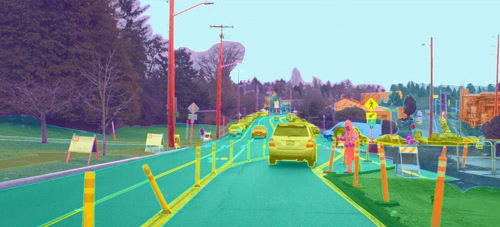
第 55 页 · 在智能制造中，最常见的工作就是对目标工件进行安装，但是在安装前往往需要先对目标进行定位，安装后还需对目标进行测量。安装和
在智能制造中，最常见的工作就是对目标工件进行安装，但是在安装前往往需要先对目标进行定位，安装后还需对目标进行测量。安装和测量都需要保持较高的精度和速度，如毫米级精度（甚至更小），毫秒级速度。这种高精度、高速度的定位和测量，倚靠通常的机械或人工的方法是难以办到的。在机器视觉中，采用图像处理的办法，对安装现场图像进行处理，按照目标和图像之间的复杂映射关系进行处理，从而快速精准地完成定位和测量任务。
11.4.5 目标定位和测量
第 56 页 · 图像处理中的运动目标检测和跟踪，就是实时检测摄像机捕获的场景图像中是否有运动目标，并预测它下一步的运动方向和趋势，即跟踪
图像处理中的运动目标检测和跟踪，就是实时检测摄像机捕获的场景图像中是否有运动目标，并预测它下一步的运动方向和趋势，即跟踪。并及时将这些运动数据提交给后续的分析和控制处理，形成相应的控制动作。图像采集一般使用单个摄像机，如果需要也可以使用两个摄像机，模仿人的双目视觉而获得场景的立体信息，这样更加有利于目标检测和跟踪处理。
11.4.6 目标检测和跟踪
第 57 页 · PART 05
PART 05
视觉技术的应用
第 58 页 · 图像是人类获取和交换信息的主要来源，因此与图像相关的图像识别技术必定也是未来的研究重点。计算机的图像识别技术在公共安全、
图像是人类获取和交换信息的主要来源，因此与图像相关的图像识别技术必定也是未来的研究重点。计算机的图像识别技术在公共安全、生物、工业、农业、交通、医疗等很多领域都有应用。例如交通方面的车牌识别系统，安全方面的人脸识别技术、指纹识别技术，农业方面的种子识别技术、食品品质检测技术，医学方面的心电图识别技术等。随着计算机技术的不断发展，图像识别技术也在不断地优化，其算法也在不断地改进。
11.5 视觉技术的应用
第 59 页 · 计算机视觉应用的实例包括：
计算机视觉应用的实例包括：
（1）控制过程，比如一个工业机器人；
（2）导航，例如通过自主汽车或移动机器人；
（3）检测事件，如对视频监控和人数统计 ；
（4）组织信息，例如对于图像和图像序列的索引数据库；
（5）造型对象或环境，如医学图像分析系统或地形模型；
11.5 视觉技术的应用
第 60 页 · （6）相互作用，例如当输入到一个装置，用于计算机人的交互；
（6）相互作用，例如当输入到一个装置，用于计算机人的交互；
（7）自动检测，例如制造业的应用程序；
（8）自动汽车驾驶；
（9）生物识别技术，例如人脸识别。
11.5 视觉技术的应用
第 61 页 · 最突出的应用领域是医疗计算机视觉和医学图像处理。这个领域的特征信息从图像数据中提取用于针对患者进行医疗诊断。通常，图像数
最突出的应用领域是医疗计算机视觉和医学图像处理。这个领域的特征信息从图像数据中提取用于针对患者进行医疗诊断。通常，图像数据是在显示显微镜图像、X射线图像、血管造影图像、超声图像和断层图像，例如检测肿瘤、动脉粥样硬化或其他恶性变化，也可以是器官的尺寸，血流量等，还支持提供医学研究的测量。计算机视觉在医疗领域的应用还包括增强人类的感知能力，例如超声图像或X射线图像，以降低受噪声影响的图像。
11.5 视觉技术的应用
第 62 页 · 第二个重要应用领域是工业，即机器视觉。信息被提取用于支撑制造工序。一个例子是质量控制，其中的信息或最终产品被自动检测。机
第二个重要应用领域是工业，即机器视觉。信息被提取用于支撑制造工序。一个例子是质量控制，其中的信息或最终产品被自动检测。机器视觉也被大量用于农业。
11.5 视觉技术的应用
第 63 页 · 军事上的应用很可能是计算机视觉最大的应用领域之一。一个典型的例子是探测敌方的士兵或车辆以及导弹制导。某些先进的系统是为导
军事上的应用很可能是计算机视觉最大的应用领域之一。一个典型的例子是探测敌方的士兵或车辆以及导弹制导。某些先进的系统是为导弹制导发送目标区域，而不是一个具体的目标，当导弹到达基于本地获取的图像数据区域时再对目标做出选择。现代军事概念，如“战场感知”，意味着各种传感器，包括图像传感器，提供丰富的相关作战场景，用作支持战略决策的信息。在这种情况下，可自动处理数据以降低复杂性和融合来自多个传感器的信息，提高可靠性。
11.5 视觉技术的应用
第 64 页 · 一个较新的应用领域是自主交通，其中包括潜水装置、陆上车辆（带轮子，如轿车或卡车）、高空作业车和无人机。完全独立的自主化水
一个较新的应用领域是自主交通，其中包括潜水装置、陆上车辆（带轮子，如轿车或卡车）、高空作业车和无人机。完全独立的自主化水平，通常使用计算机视觉进行导航，即知道它在哪里，用于指定的生产环境（地图）或检测障碍物，它也可以被用于检测特定任务的特定事件，例如寻找森林火灾。
应用领域还包括支持视觉特效制作的电影和广播，例如，摄像头跟踪（运动匹配）、监视等。
11.5 视觉技术的应用
第 65 页 · 计算机视觉系统的结构在很大程度上依赖其应用方向。有些是独立工作的，解决具体的测量或检测问题，有些作为某个大型复杂系统的一
计算机视觉系统的结构在很大程度上依赖其应用方向。有些是独立工作的，解决具体的测量或检测问题，有些作为某个大型复杂系统的一部分，比如和机械控制系统、数据库系统、人机接
口设备协同工作。计算机视觉系统中
的有些功能几乎是每个系统都需要具
备的。
11.5.1 视觉系统典型功能
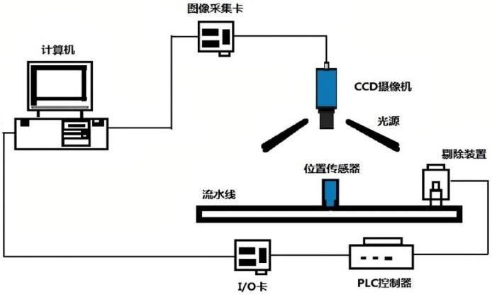
第 66 页 · 计算机视觉系统的一些关键要素包括：
计算机视觉系统的一些关键要素包括：
· 光源布局影响大，需审慎考量。
· 正确选择镜组，考量倍率、空间、尺寸、失真等。
· 选择合适的摄影机（CCD），考量其功能、规格、稳定性、耐用型等。
· 视觉软件的开发依赖经验累积，要多尝试、思考问题的解决途径。
· 以创造精度的不断提升，缩短处理时间为最终目标。
11.5.1 视觉系统典型功能
第 67 页 · （1）图像获取。一幅数字图像是由一个或多个图像感知器产生，感知器可以是各种光敏摄像机，包括遥感设备、X射线断层摄影仪、雷
（1）图像获取。一幅数字图像是由一个或多个图像感知器产生，感知器可以是各种光敏摄像机，包括遥感设备、X射线断层摄影仪、雷达、超声波接收器等。取决于不同的感知器，产生的图片可以是普通的二维图像、三维图组或者一个图像序列。图片的像素值往往对应于光在一个或多个光谱段上的强度（灰度图或彩色图），但也可以是相关的各种物理数据，如声波、电磁波或核磁共振的深度、吸收度或反射度。
11.5.1 视觉系统典型功能
第 68 页 · （2）预处理。在对图像实施具体的计算机视觉方法来提取某种特定的信息之前，往往采用一种或一些预处理来使图像满足后继方法的要
（2）预处理。在对图像实施具体的计算机视觉方法来提取某种特定的信息之前，往往采用一种或一些预处理来使图像满足后继方法的要求。例如：
· 二次取样保证图像坐标的正确；
· 平滑去噪来滤除感知器引入的设备噪声；
· 提高对比度来保证实现相关信息可以被检测到；
· 调整尺度空间使图像结构适合局部应用。
11.5.1 视觉系统典型功能
第 69 页 · （3）特征提取。从图像中提取各种复杂度的特征。例如：
（3）特征提取。从图像中提取各种复杂度的特征。例如：
· 线，边缘提取；
· 局部化的特征点检测如边角检测，斑点检测；
· 更复杂的特征可能与图像中的纹理形状或运动有关。
（4）检测分割。在处理过程中，有时会需要对图像进行分割来提取有价值的用于后继处理的部分，例如筛选特征点；分割一或多幅图片中含有特定目标的部分。
11.5.1 视觉系统典型功能
第 70 页 · （5）高级处理。到了这一步，数据的数量就不多了，例如图像中只有经先前处理被认为含有目标物体的部分。这时的处理包括：
（5）高级处理。到了这一步，数据的数量就不多了，例如图像中只有经先前处理被认为含有目标物体的部分。这时的处理包括：
· 验证得到的数据是否符合前提要求；
· 估测特定系数，比如目标的姿态，体积；
· 对目标进行分类。
高级处理有理解图像内容的含义，是计算机视觉中的高阶处理，主要是在图像分割的基础上再经行对分割出的图像块进行理解，例如进行识别等操作。
11.5.1 视觉系统典型功能
第 71 页 · 机器视觉的应用主要在半导体及电子行业，还在质量检测的各个方面已经得到了广泛的应用，并且其产品在应用中占据着举足轻重的地位
机器视觉的应用主要在半导体及电子行业，还在质量检测的各个方面已经得到了广泛的应用，并且其产品在应用中占据着举足轻重的地位。
11.5.2 机器视觉的行业应用
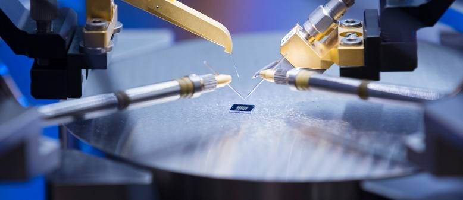
第 72 页 · 随着经济水平的提高，3D机器视觉也开始进入人们的视野，它可用于水果和蔬菜、木材、化妆品、烘焙食品、电子组件和医药产品的评
随着经济水平的提高，3D机器视觉也开始进入人们的视野，它可用于水果和蔬菜、木材、化妆品、烘焙食品、电子组件和医药产品的评级，可以提高合格产品的生产能力，在生产过程的早期就报废劣质产品，从而减少了浪费节约成本。这种功能非常适合用于高度、形状、数量甚至色彩等产品属性的成像。
11.5.2 机器视觉的行业应用
第 73 页 · 在行业应用方面，主要有制药、包装、电子、汽车制造、半导体、纺织、烟草、交通、物流等行业，用机器视觉技术取代人工，可以提供
在行业应用方面，主要有制药、包装、电子、汽车制造、半导体、纺织、烟草、交通、物流等行业，用机器视觉技术取代人工，可以提供生产效率和产品质量。例如在物流行业，可以使用机器视觉技术进行快递的分拣分类，不会出现大多快递公司人工进行分拣，减少物品的损坏率，可以提高分拣效率，减少人工劳动。
11.5.2 机器视觉的行业应用
第 74 页 · 机器视觉的应用主要有检测和机器人视觉两个方面：
机器视觉的应用主要有检测和机器人视觉两个方面：
（1）检测：又分为高精度定量检测（如显微照片的细胞分类、机械零部件的尺寸和位置测量）和不用量器的定性或半定量检测（例如产品的外观检查、装配线上的零部件识别定位、缺陷性检测与装配完全性检测）。
（2）机器人视觉：用于指引机器人在大范围内的操作和行动，如从料斗送出的杂乱工件堆中拣取工件并按一定的方位放在传输带或其他设备上（即料斗拣取问题）。至于小范围内的操作和行动，需要借助于触觉传感技术。
11.5.3 检测与机器人视觉应用
第 75 页 · 此外还有自动光学检查、人脸识别、无人驾驶汽车、产品质量等级分类、印刷品质量自动化检测、文字识别、纹理识别、追踪定位等等机
此外还有自动光学检查、人脸识别、无人驾驶汽车、产品质量等级分类、印刷品质量自动化检测、文字识别、纹理识别、追踪定位等等机器视觉图像识别的应用，举例如下。
11.5.3 检测与机器人视觉应用
第 76 页 · （1）汽车车身检测系统。英国ROVER汽车公司800系列汽车车身轮廓尺寸精度的100%在线检测，是机器视觉系统用于工业检
（1）汽车车身检测系统。英国ROVER汽车公司800系列汽车车身轮廓尺寸精度的100%在线检测，是机器视觉系统用于工业检测中的一个较为典型的例子，该系统由62个测量单元组成，每个测量单元包括一台激光器和一个CCD摄像机，用以检测车身外
壳上288个测量点。汽车车身置于测量
框架下，通过软件校准车身的精确位
置。
图11-12 汽车在线检测
11.5.3 检测与机器人视觉应用
第 77 页 · 测量单元的校准将会影响检测精度，因而受到特别重视。每个激光器/摄像机单元均在离线状态下经过校准。同时还有一个在离线状态下
测量单元的校准将会影响检测精度，因而受到特别重视。每个激光器/摄像机单元均在离线状态下经过校准。同时还有一个在离线状态下用三坐标测量机校准过的校准装置，可对摄像顶进行在线校准。
检测系统以每40秒检测一个车身的速度，检测三种类型的车身。系统将检测结果与人、从CAD模型中提取出来的合格尺寸相比较，测量精度为±0.1mm。ROVER的质量检测人员用该系统来判别关键部分的尺寸一致性，如车身整体外型、门、玻璃窗口等。实践证明，该系统是成功的，并将用于ROVER公司其他系统列汽车的车身检测。
11.5.3 检测与机器人视觉应用
第 78 页 · （2）质量检测系统。纸币印刷质量检测系统利用图像处理技术，通过对纸币生产流水线上的纸币20多项特征（号码、盲文、颜色、图
（2）质量检测系统。纸币印刷质量检测系统利用图像处理技术，通过对纸币生产流水线上的纸币20多项特征（号码、盲文、颜色、图案等）进行比较分析，检测纸币的质量，替代传统的人眼辨别的方法。
瓶装啤酒生产流水线检测系统可以检测啤酒是否达到标准的容量、啤酒标签是否完整。
11.5.3 检测与机器人视觉应用
第 79 页 · （3）智能交通管理系统。通过在交通要道放置摄像头，当有违章车辆（如闯红灯）时，摄像头将车辆的牌照拍摄下来，传输给中央管理
（3）智能交通管理系统。通过在交通要道放置摄像头，当有违章车辆（如闯红灯）时，摄像头将车辆的牌照拍摄下来，传输给中央管理系统，系统利用图像处理技术，对拍摄的图片进行分析，提取出车牌号，存储在数据库中，可以供管理人员进
行检索。
11.5.3 检测与机器人视觉应用
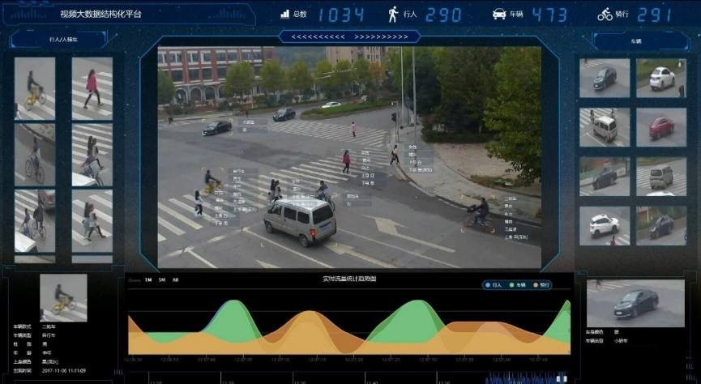
第 80 页 · （4）图像分析。金相图像分析系统能对金属或其他材料的基体组织、杂质含量、组织成分等进行精确、客观地分析，为产品质量提供可
（4）图像分析。金相图像分析系统能对金属或其他材料的基体组织、杂质含量、组织成分等进行精确、客观地分析，为产品质量提供可靠依据。例如金属表面的裂纹测量：用微波作为信号源，根据微波发生器发出不同波涛率的方波，测量金属表面的裂纹，微波的波的频率越高，可测的裂纹越狭小。
医疗图像分析，包括血液细胞自动分类计数、染色体分析、癌症细胞识别等。
11.5.3 检测与机器人视觉应用
第 81 页 · （5）大型工件平行度、垂直度测量仪。采用激光扫描与CCD探测系统的大型工件平行度、垂直度测量仪，它以稳定的准直激光束为测
（5）大型工件平行度、垂直度测量仪。采用激光扫描与CCD探测系统的大型工件平行度、垂直度测量仪，它以稳定的准直激光束为测量基线，配以回转轴系，旋转五角标棱镜扫出互相平行或垂直的基准平面，将其与被测大型工件的各面进行比较。在加工或安装大型工件时，可用该认错器测量面间的平行度及垂直度。
（6）轴承实时监控。视觉技术实时监控轴承的负载和温度变化，消除过载和过热的危险。将传统上通过测量滚珠表面保证加工质量和安全操作的被动式测量变为主动式监控。
11.5.3 检测与机器人视觉应用
第 82 页 · 在布匹生产过程中，像布匹质量检测这种有高度重复性和智能性的工作通常只能靠人工检测来完成，在现代化流水线后面常常可看到很多
在布匹生产过程中，像布匹质量检测这种有高度重复性和智能性的工作通常只能靠人工检测来完成，在现代化流水线后面常常可看到很多的检测工人来执行这道工序，给企业增加巨大的人工成本和管理成本的同时，却仍然不能保证100 %的检验合格率（即“零缺陷”）。
对布匹质量的检测是重复性劳动，容易出
错且效率低。采用机器视觉的自动识别技
术，在大批量的布匹检测中，可以大大提
高生产效率和生产的自动化程度。
11.5.4 布匹生产质量检测
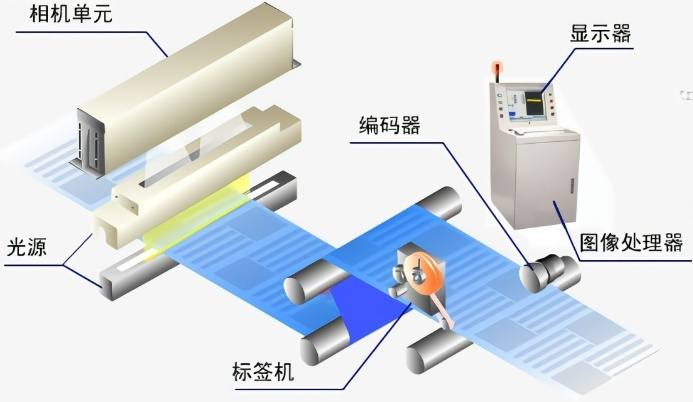
第 83 页 · （1）特征提取辨识。一般布匹检测（自动识别）先利用高清晰度、高速摄像镜头拍摄标准图像，在此基础上设定标准；然后拍摄被检测
（1）特征提取辨识。一般布匹检测（自动识别）先利用高清晰度、高速摄像镜头拍摄标准图像，在此基础上设定标准；然后拍摄被检测的图像，再将两者进行对比。但是在布匹质量检测工程中要复杂一些：
· 图像内容不是单一的，每块被测区域存在杂质的数量、大小、颜色、位置不一致情况。
· 杂质的形状难以事先确定。
· 由于布匹快速运动对光线产生反射，图像中可能会存在大量的噪声。
· 在流水线上，对布匹进行检测，有实时性的要求。
11.5.4 布匹生产质量检测
第 84 页 · 因此，图像识别处理时采取相应算法，提取杂质的特征进行模式识别，实现智能分析。
因此，图像识别处理时采取相应算法，提取杂质的特征进行模式识别，实现智能分析。
11.5.4 布匹生产质量检测
第 85 页 · （2）色质检测。一般而言，从彩色CCD相机中获取的图像都是RGB图像。也就是说每一个像素都由红（R）绿（G）蓝（B）三个
（2）色质检测。一般而言，从彩色CCD相机中获取的图像都是RGB图像。也就是说每一个像素都由红（R）绿（G）蓝（B）三个成分组成，来表示RGB色彩空间中的一个点。问题在于这些色差不同于人眼的感觉。即使很小的噪声也会改变颜色空间中的位置。
所以无论我们人眼感觉有多么的近似，在颜色空间中也不尽相同。基于上述原因，需要将RGB像素转换成为另一种颜色空间CIELAB。目的就是使我们人眼的感觉尽可能的与颜色空间中的色差相近。
11.5.4 布匹生产质量检测
第 86 页 · （3）Blob检测。根据得到的处理图像，按需求在纯色背景下检测杂质色斑，并计算出色斑面积，以确定是否在检测范围之内。软件
（3）Blob检测。根据得到的处理图像，按需求在纯色背景下检测杂质色斑，并计算出色斑面积，以确定是否在检测范围之内。软件要有分离目标，检测目标，并且计算出其面积的功能。
11.5.4 布匹生产质量检测
第 87 页 · Blob分析是对图像中相同像素的连通域进行分析，该连通域称为Blob。经二值化处理后的图像中色斑可认为是blob。Blo
Blob分析是对图像中相同像素的连通域进行分析，该连通域称为Blob。经二值化处理后的图像中色斑可认为是blob。Blob分析工具可以从背景中分离出目标，并可计算出目标的数量、位置、形状、方向和大小，还可以提供相关斑点间的拓扑结构。在处理过程中不是采用单个的像素逐一分析，而是对图形的行进行操作。图像的每一行都用游程长度编码（RLE）来表示相邻的目标范围。这种算法与基于象素的算法相比，大大提高处理速度。
11.5.4 布匹生产质量检测
第 88 页 · （4）结果处理和控制。应用程序把返回结果存入数据库或用户指定位置，并控制机械部分做相应运动。根据识别结果，存入数据库进行
（4）结果处理和控制。应用程序把返回结果存入数据库或用户指定位置，并控制机械部分做相应运动。根据识别结果，存入数据库进行信息管理。可以随时对信息进行检索查询，管理者可以获知某段时间内流水线的忙闲，为下一步的工作作出安排；可以获知内布匹的质量情况等。
11.5.4 布匹生产质量检测
第 89 页 · 01

01
模式识别
02
图像识别
03
计算机
视觉技术
04
智能图像
处理技术
目录 / CONTENTS
05
视觉技术
的应用
第 90 页 · 第11章
第11章
周苏 教授 QQ：81505050
计算机视觉